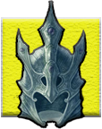

Archives of Nethys

)window.location=%27https://2e.aonprd.com/Images/Treasure/Aeon_Stone.webp%27) Source GM Core pg. 284
Source GM Core pg. 284Usage worn; Bulk —
Over millennia, these mysterious, intricately cut gemstones have been hoarded by mystics and fanatics hoping to discover their secrets. Despite their myriad forms and functions, these stones are purportedly all fragments of crystal tools used by otherworldly entities to construct the universe in primeval times.
When you invest one of these precisely shaped crystals, the stone orbits your head instead of being worn on your body. You can stow an aeon stone with an Interact action, and an orbiting stone can be snatched out of the air with a successful Disarm action against you. A stowed or removed stone remains invested, but its effects are suppressed until you return it to orbit your head again.
There are various types of aeon stones, each with a different appearance and magical effect. Each aeon stone also gains a resonant power when slotted into a special magical item called a wayfinder
 Aeon Stone (Consumed)Item 1
Aeon Stone (Consumed)Item 1
Source GM Core pg. 284Price 9 gp
A consumed aeon stone is a dull lump that has lost its magical properties. It still rotates your head like any other aeon stone and can thus serve as a stylish, hand-free option for various spells that target an object. This aeon stone has no resonant power.
Aeon Stone (Dusty Rose Prism)Item 3
Source PFS Guide pg. 121PFS Note All characters affiliated with the Pathfinder Society have access to this item
Price 50 gp
Usage worn
Access Member of the Pathfinder Society.
This aeon stone allows you to cast the 1st-level shield cantrip as an arcane innate spell, surrounding yourself in pink energy.
The resonant power increases the damage prevented by your aeon stone's shield spell from 5 to 10.
Aeon Stone (Pearly White Spindle)Item 3
Source PFS Guide pg. 121PFS Note All characters affiliated with the Pathfinder Society have access to this item
Price 60 gp
Usage worn
Access Member of the Pathfinder Society.
When you invest this aeon stone, it slowly starts healing your wounds, restoring 1 HP every minute.
The resonant power grants you resistance 1 to negative damage.
Aeon Stone (Polished Pebble)Item 3
Earth Source Rage of Elements pg. 98
PFS Note The polished pebble aeon stone only grants its item bonus to Fortitude saves and DCs against attempts to grapple or swallow the holder; it does not provide a universal bonus to Fortitude saves.
Price 50 gp
A polished pebble aeon stone imbues you with the strength of the earth, granting a +1 item bonus to saves and DCs against attempts to grapple or swallow you.
The stone's resonant power allows you to cast grease as a primal innate spell once per day. You can target only surfaces, not objects, with this spell.

Aeon Stone (Formulating)Item 4
Source Pathfinder #213: Thirst for Blood pg. 81Price 75 gp
This four-sided prism is imbued with knowledge for the construction of several objects. The stone contains the knowledge of all formulas found in a basic crafter’s book. While you have the stone invested, you have the full knowledge of the stone’s formulas. This counts as having the formula for the purposes of Crafting checks. While you have this knowledge, you can write the formulas down for later use, such as if you lose access to the stone. You also gain a +1 item bonus to skill checks made to Craft while the stone is invested.
The resonant power allows you to cast phantasmal minion as an arcane innate spell once per day.
Aeon Stone (Repairing)Item 4
Source Pathfinder #213: Thirst for Blood pg. 82Price 75 gp
This translucent, spherical stone’s center contains a multitude of sparkling, colored flecks. While you have this stone invested, you gain a +1 item bonus to skill checks made to Craft. Additionally, when Repairing an item, you restore an additional 5 Hit Points to the item (10 Hit Points on a critical success).
The resonant power allows you to cast mending as an arcane innate spell once per day.
Aeon Stone (Azure Briolette)Item 4
Source PFS Guide pg. 121PFS Note All characters affiliated with the Pathfinder Society have access to this item
Price 85 gp
Usage worn
Access Member of the Pathfinder Society.
This aeon stone must be activated to provide a benefit.
Activate [reaction] envision; Trigger An enemy fails its save against a mental spell you cast using one of your spell slots; Effect You gain temporary Hit Points equal to twice the spell's level until your next turn.
The resonant power grants a separate activation.
Activate [two-actions] command, Interact; Frequency once per day; Effect You gain the effect of a chill touch arcane cantrip.
Aeon Stone (Clear Quartz Octagon)Item 4
Source Pathfinder #179: Cradle of Quartz pg. 79Price 90 gp
Usage worn
This clear quartz stone appears to have been smashed and then repaired by pouring molten copper into the cracks and fitting the shards back together using the copper as a sort of mortar. When a non-magical item in your possession with a value of 90 gp or less and a Bulk of 1 Bulk or less would become broken, this aeon stone automatically activates, preventing the item from breaking by restoring the item's current Hit Points to the item's maximum Hit Points. The stone then turns permanently into a dull gray aeon stone.
The stone's resonant power allows you to cast 1st-level mending as a divine innate spell once per day.
Aeon Stone (Preserving)Item 5
Source GM Core pg. 284Price 150 gp
This red crystalline star covers you in a faint aura when you are subject to lingering wounds. You gain resistance 3 to persistent damage. At the end of any turn where the persistent damage can't overcome this resistance, end that condition.
The resonant power allows you to cast stabilize as a primal innate cantrip.
Aeon Stone (Agate Ellipsoid)Item 5
Source PFS Guide pg. 121PFS Note All characters affiliated with the Pathfinder Society have access to this item
Price 130 gp
Usage worn
Access Member of the Pathfinder Society.
This aeon stone allows you to cast 2nd-level augury as a divine innate spell once per day.
The resonant power causes the augury spell from the aeon stone to always succeed at the DC 6 flat check to give an answer other than “nothing.”
Aeon Stone (Sprouting)Item 6
Source GM Core pg. 284Price 220 gp
Encouraging the natural growth of life, this green ovoid can often be found surrounded by new seedlings. Its resonant power allows you to cast tangle vine as a primal innate cantrip.
Activate—Flow of Life [reaction] (concentrate, vitality); Frequency once per hour; Trigger You are healed by a vitality efect or took void damage; Effect You gain 8 temporary Hit Points that last for 1 minute.
Aeon Stone (Crescent)Item 6
Source Pathfinder #215: To Blot Out the Sun pg. 79Price 225 gp
Once holy relics, the creation of crescent aeon stones was inspired by Acavna, goddess of the moon and protection. The crescent aeon stone continually sheds dim light in a 5-foot radius.
The resonant power enables you to cast forbidding ward as a divine innate cantrip.
Activate—Moonbeam [two-actions] (concentrate, divine, holy, light, spirit); Frequency once per day; Effect The crescent aeon stone fires a blast of silvery moonlight in a 100-foot line, dealing 4d12 spirit damage to all creatures in the area (DC 22 basic Reflex save). This is silver damage for the purposes of weaknesses, resistances, and the like.
Aeon Stone (Western Star)Item 6
Source PFS Guide pg. 122PFS Note All characters affiliated with the Pathfinder Society have access to this item
Price 225 gp
Usage worn
Access Member of the Pathfinder Society.
This aeon stone must be activated to provide a benefit.
Activate [two-actions] envision, Interact; Effect You activate the aeon stone to gain the effects of a 1st-level illusory disguise.
The resonant power allows you to render all of your aeon stones and your wayfinder invisible whenever you use the activation to gain the effects of illusory disguise.
Aeon Stone (Delaying)Item 7
Source GM Core pg. 284Price 350 gp
When you would die from the dying condition (typically at dying 4), this smooth pink stone automatically activates and reduces your dying value to 1 less than would normally kill you (typically to dying 3). The stone then permanently turns into a consumed aeon stone. You can benefit from this ability only once per day, even if you have multiple such stones.
The resonant power allows you to cast 1st-rank heal as a divine innate spell once per day.
Aeon Stone (Nourishing)Item 7
Source GM Core pg. 284Price 325 gp
After you've invested and worn this transparent stone for a week continuously, you no longer need to eat or drink. This time resets if you remove the aeon stone or it's invested by someone else. The resonant power allows you to cast air bubble as a primal innate spell once per day.
Aeon Stone (Smoothing)Item 7
Source GM Core pg. 284Price 310 gp
This spherical piece of silvery stone helps you ignore minor issues. You can ignore status penalties to skill checks from clumsy, enfeebled, frightened, sickened, and stupefied conditions as long as the value of that condition is 1. Its resonant power allows you to cast guidance as an occult innate cantrip.
Aeon Stone (Vital amplification)Item 7
Source Pathfinder #215: To Blot Out the Sun pg. 79Price 330 gp
A vital amplification aeon stone improves the flow of vital energy through your body, speeding the healing process and safeguarding your body from life-draining effects. Whenever you regain Hit Points, you regain an additional 1 Hit Point for each 10 Hit Points regained (minimum 1 additional Hit Point). The resonant power grants you resistance 5 to void damage.
Aeon Stone (Envisioning)Item 8
Source GM Core pg. 284Price 425 gp
This clear cube allows you to communicate with a limited form of telepathy to a range of 100 feet. The messages are transmitted as a simple image each round. These images are the quality of a hasty or childish sketch but can be roughly understood by creatures regardless of language. This provides no special ability to respond to your images.
The resonant power allows you to cast translate as an occult innate spell once per day.
Aeon Stone (Cymophane Cabochon)Item 9
Earth Source Rage of Elements pg. 98
PFS Note The cymophane cabochon aeon stone only provides its item bonus to Perception checks and DCs against Hide, Sneak and Steal actions, not a universal bonus to Perception checks and DCs
Price 650 gp
Jabalis use the cymophane cabochon aeon stone to keep an eye on their belongings and surroundings. You gain a +2 item bonus to Perception checks and DCs against Hide, Sneak, and Steal actions.
The resonant power allows you to cast see the unseen as an arcane innate spell once per day.
Aeon Stone (Pearlescent Pyramid)Item 10
Source PFS Guide pg. 121PFS Note All characters affiliated with the Pathfinder Society have access to this item
Price 900 gp
Usage worn
Access Member of the Pathfinder Society.
While invested, this aeon stone grants the benefit of the ghost touch property rune to your weapons and unarmed attacks.
The resonant power grants a special activation.
Activate [one-action] envision; Frequency once per minute; Effect You gain the effects of see invisibility for 1 round.
Aeon Stone (Flickering)Item 11
Source Pathfinder #215: To Blot Out the Sun pg. 79Price 1,200 gp
A flickering aeon stone contains a drop of orichalcum at its center. It remains slightly out of phase with reality, giving it a translucent appearance.
Activate—Flicker [one-action] Frequency once per day; Effect The flickering aeon stone draws you slightly out of sync with the flow of time, causing you to flicker in and out of existence. You become concealed for 1 minute, but you can’t use this concealment to Hide or Sneak.
Activate—Enter Stasis [one-action] Frequency once per day; Effect The flickering aeon stone pulls you from the flow of time completely, placing you in temporary stasis while you heal, then returning you to reality at the moment you left. You regain 2d10+8 Hit Points. If you have the clumsy, drained, enfeebled, or stupefied condition, the value of each of these conditions is reduced by 1.
The resonant power grants you a +1 circumstance bonus to initiative rolls.
Aeon Stone (Pink Rhomboid)Item 12
Source Core Rulebook pg. 604Price 1,900 gp
When you invest this stone, you gain 15 temporary Hit Points. If the stone’s effects are suppressed, you lose any of the temporary Hit Points remaining until it returns. The temporary Hit Points refresh during your daily preparations; they do not refresh if you re-invest the stone, or invest another pink rhomboid aeon stone, before then.
The resonant power allows you to cast the stabilize cantrip as a divine innate spell.
Aeon Stone (Black Pearl)Item 12
Source World Guide pg. 63PFS Note All characters of 10th level or higher who are from the High Seas have access to black pearl aeon stones
Price 2,000 gp
Usage worn
This black pearl sparkles with light. The resonant power allows you to cast sending once per day.
Activate [reaction] envision; Trigger you are targeted by a mental effect; Effect You receive a +4 status bonus to your saving throw against the triggering effect. Whether or not your save is successful, the aeon stone attempts a counteract check at +30 to immediately reflect a copy of the effect back at the originator, targeting it using the creature’s own relevant statistics but controlling the effect as if you had cast it.
Every time you activate this aeon stone, attempt a DC 5 flat check. On a failure, the stone shatters and loses its magical properties forever.
Aeon Stone (Pale Lavender Ellipsoid)Item 13
Source Core Rulebook pg. 604Price 2,200 gp
This aeon stone must be activated to provide a benefit. The resonant power allows you to cast the read aura cantrip as an arcane innate spell.
Activate [reaction] envision; Frequency once per day; Trigger A spell targets you; Effect The stone casts a 6th-level dispel magic spell in an attempt to counteract the triggering spell, with a counteract modifier of +22. This can be used only on spells that specifically target you—not area spells that don’t have targets. If it succeeds, it counteracts the spell for all targets if other creatures were targeted in addition to you. Each time you activate this aeon stone, attempt a DC 5 flat check. On a failure, the stone permanently turns into a dull gray aeon stone.
Aeon Stone (Rainbow Prism)Item 13
Source Pathfinder #185: A Taste of Ashes pg. 77Price 2,200 gp
While this aeon stone orbits your head, the flat part of its base tumbles to briefly face creatures you can see within 30 feet, as though the stone is watching them. You can activate this stone in two ways.
Activate [two-actions] envision; Effect The aeon stone captures the image of a creature of your size that you can see within 30 feet. It can have up to 3 images captured at a time; if you capture a fourth, you decide which image it replaces.
Activate [two-actions] envision; Frequency three times per day; Requirements The prism is storing at least one image of a creature of your size; Effect The aeon stone casts a 3rd-level illusory disguise on you, which must be of one of the creatures it has currently captured. While you are under the effects of this spell, the aeon stone is invisible.
The resonant power allows the stone to capture up to 5 images. If removed from the wayfinder, you must decide which images to lose.
Aeon Stone (Olivine Pendeloque)Item 14
Earth Source Rage of Elements pg. 98
Price 1,200 gp
An olivine pendeloque aeon stone imparts the calmness of still earth and a solidity of thought, granting you a +3 item bonus to saving throws against effects that cause the confused, frightened, or stupefied conditions.
Activate—Still Earth [reaction] (concentrate); Frequency once per hour; Trigger You become confused, frightened, or stupefied; Effect The stone suppresses the triggering effect for 1 minute, but the calming urges impose a –1 status penalty to your attack rolls.
Aeon Stone (Mottled Ellipsoid)Item 15
Source Pathfinder #185: A Taste of Ashes pg. 77Price 6,100 gp
This aeon stone alters your life force. You gain negative healing, which means you are damaged by positive energy and not healed by positive healing effects. You don't take negative damage, and you are healed by negative effects that heal undead.
The resonant power allows you to cast 7th-level false life once per day.
Aeon Stone (Amplifying)Item 16
Source GM Core pg. 284Price 9,750 gp
An amplifying aeon stone must be activated to provide a benefit. The resonant power grants you a +2 item bonus to Arcana, Nature, Occultism, or Religion checks—whichever corresponds to the tradition of the last spell you enhanced with this aeon stone.
Activate—Amplify [one-action] (concentrate, spellshape); Effect If your next action is to Cast a Spell, that spell's rank is 1 higher (maximum 10th rank) for the purposes of counteracting and being counteracted.
Aeon Stone (Peering)Item 16
Source GM Core pg. 284Price 9,500 gp
This faintly colored prism catches and transforms light. If the aeon stone is in an area of bright light, shades of purple light provide dim light in a 30-foot radius. In that radius, magical items and effects are tinged with purple, the depth of the color revealing their counteract rank.
The GM also secretly rolls a counteract check against any darkness or illusion effect the light touches. It has a counteract modifier of +25. If the light fails to counteract an effect, it won't try again for 24 hours.
Inside a wayfinder, the aeon stone cannot catch light. However, its resonant power lets you activate or deactivate the aeon stone's light emitting from the wayfinder as an Interact action.
Aeon Stone (Amber Sphere)Item 16
Source Pathfinder #185: A Taste of Ashes pg. 77Price 9,800 gp
If you are undead, your body regains much of the appearance it had in life, and you gain a +2 item bonus to Deception to Impersonate yourself as a living creature. If you're alive, your appearance is the healthiest version of yourself, and you gain a +2 item bonus to Make an Impression or Request that involves your strength or vigor.
The resonant power of the amber sphere grants you a special activation to improve your salubrious appearance to a lurid extreme.
Activate [two-actions] envision; Frequency once per day; Effect The stone casts a 7th-level mask of terror on you (DC 34 Will), causing your appearance to burst with a profusion of shocking vigor: your mouth fills with large and bright teeth, your hair animates in grasping tresses, your face flushes with bright blood that seeps from your skin, or similar. The image is unique to each observer, but you remain recognizably yourself regardless of the illusion's form.
Aeon Stone (Black Disc)Item 17
Source Pathfinder #185: A Taste of Ashes pg. 77Price 15,000 gp
This aeon stone slowly infuses negative energy into your body. The stone deals 1 persistent negative damage to you (10 negative damage per minute) so long as it's invested, and you can't recover from persistent negative damage while you have the stone invested.
The resonant power grants you resistance 10 to good damage and to positive damage.
Aeon Stone (Lavender and Green Ellipsoid)Item 19
Source Core Rulebook pg. 604Price 30,000 gp
This functions as a pale lavender ellipsoid aeon stone, but it casts an 8th-level dispel magic spell with a counteract modifier of +31.
The resonant power allows you to cast detect magic and read aura as arcane innate spells at will.
Aeon Stone (Pale Orange Rhomboid)Item 19
Source PFS Guide pg. 121PFS Note All characters affiliated with the Pathfinder Society have access to this item
Price 40,000 gp
Usage worn
Access Member of the Pathfinder Society.
The first time each day you die, your vital and spiritual essences mingle together and reside within this aeon stone. You have a limited sense of how many life forces are currently within 30 feet of the stone, which you can potentially use to determine when it's safe to call on the stone's power. At any time within the next hour after your body died, you can spend 1 minute concentrating in order to return to your body. As long as your body is still intact, you are no longer dead— you are restored to 1 HP with the doomed 3 and wounded 3 conditions. You can benefit from the effects of only one pale orange rhomboid aeon stone in a given day.
The resonant power allows you to wait more than an hour to return to your body with the aeon stone; as long as the wayfinder remains on the body, your body doesn't decay and you can return at any point.
Shelyn's Corner
×Classic Feel
Classic Feel
Classic Feel
The classic look for the Archives of Nethys.
| Table |
| Data |
| More Data |
Book Feel
Book Feel
Book Feel
An alternative feel, based on the Rulebooks.
| Table |
| Data |
| More Data |
Round Feel
Round Feel
Round Feel
A rounded, modern look for the archives.
| Table |
| Data |
| More Data |
Slim Feel
Slim Feel
Slim Feel
A variant of the Round feel, more compact.
| Table |
| Data |
| More Data |